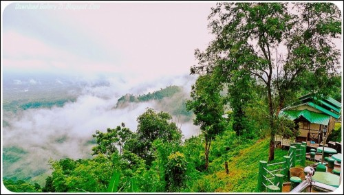

Portfolio Travel
Traveling is one of my favoirte things to do in the summer . I have been to London, California, Texas, New York, and Bangladesh. I have plans on adding more places after I finish my undergrad. One place I really want to visit is New Zeland. I would like to see the place where my favorite movie The Hobbit was filmed. I am a huge fan of scenary and love being outdoors. One of my favorite places that I have visited was in California, I really enjoyed San Francisco. Everything looked as if they were stacked on top of each other and the weather was just perfect. I have plans on moving there after my undergrad to pursue a job as a developer.